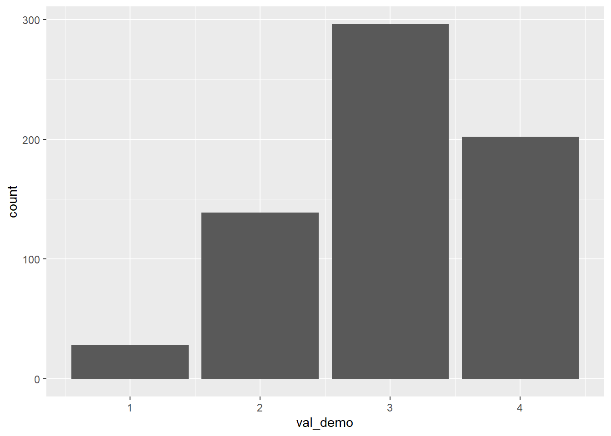
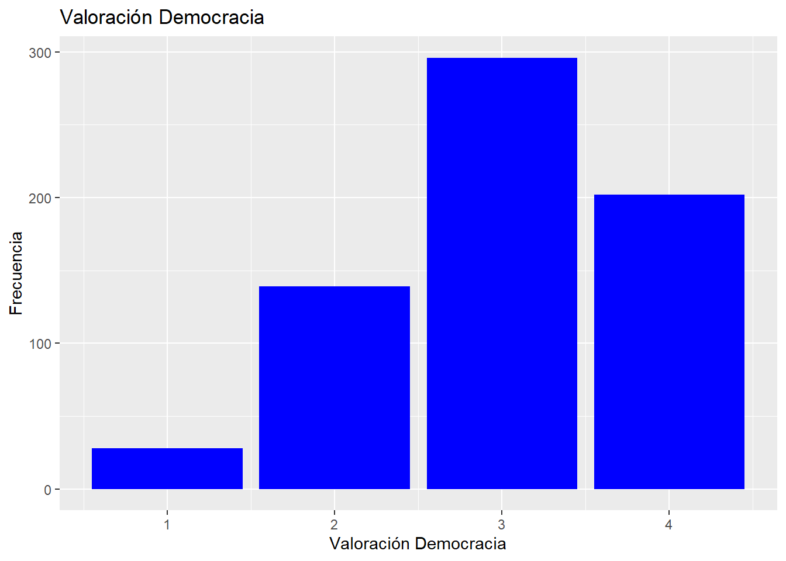
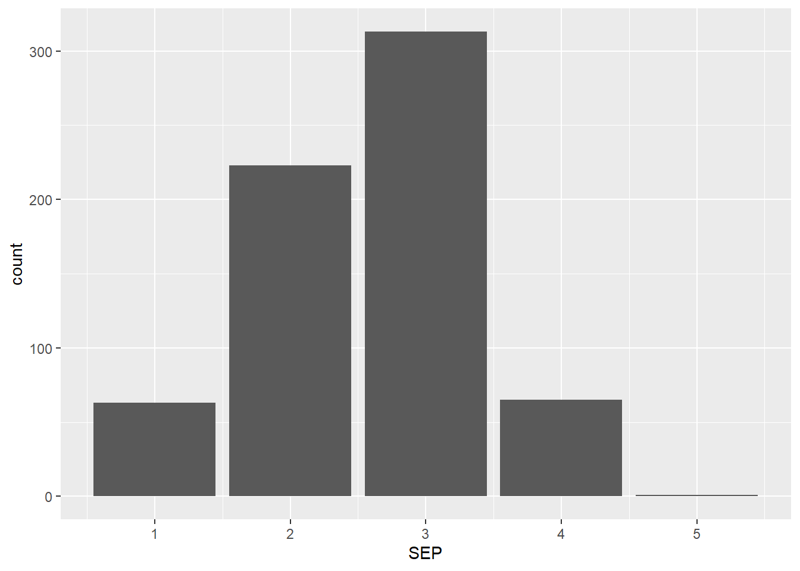
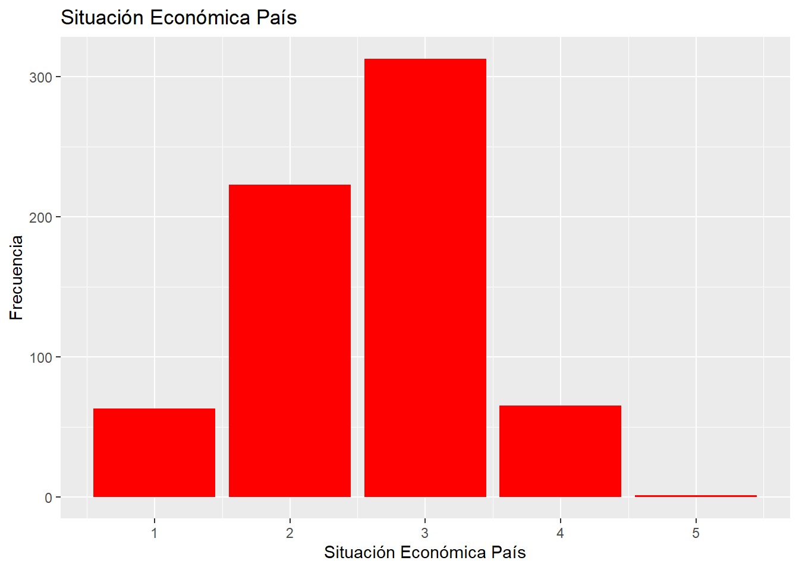
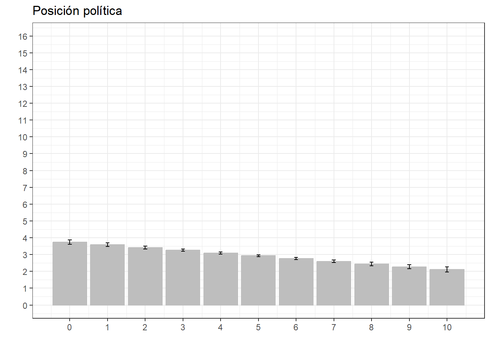

pacman::p_load(sjlabelled,
dplyr,
stargazer,
sjmisc,
summarytools,
kableExtra,
sjPlot,
corrplot,
sessioninfo,
ggplot2,
psych,
car,
tidyverse,
haven,
texreg,
ggpubr)quarto4
Conformidad situación nacional
Para observar de forma general la conformidad con la situación nacional en Chile se hará una revisión por distintos variables de la encuesta Latinobarometro.
load(file = "input/Latinobarometro.RData")data <- Latinobarometro_2023_Esp_v1_0Con la base de datos cargada seleccionamos las variables:
data_proc <- data %>%
select(P11STGBS.A, #Nivel satisfacción con la democracia en el país.
P10STGBS, #Preferencia democracia o gobierno autoritario.
P18ST.A, #La democracia es el mejor sistema de gobierno
P18STM.B, #No importa si un gobierno no democrático llega si soluciona problemas.
P18ST.I, #La democracia permite que se solucionen los problemas que tenemos.
P20STM, #Apoyar o no gobierno militar.
P16ST, #Posicionamiento izquierda/dereccha.
idenpa, #País de identificación
P9STGBS, #Confianza Personas
P13STGBS.A, #Confianza Fuerzas armadas
P13STGBS.B, #Confianza Carabineros
P13ST.F, #Confianza Poder Judicial
P5STGBS, #Situacion Económica país
P6STGBS, #Situacion mejor/peor que hace 12 meses
P7ST, # ¿Será mejor la situación país?
P8STGBS, #Situación Económica familia/propia
sexo,
edad)Para trabajar únicamente el caso de Chile, vamos a filtrar la base de datos con la variable IDENPA (identificación país).
data_proc <- data_proc %>% dplyr::filter(idenpa==152)Operacionalización variables
Primero cambiamos los nombres de las variables:
proc_data <- data_proc %>% rename("ns_demo"=P11STGBS.A, #nivel satisfacción democracia
"demo_auto"=P10STGBS, #Democracia/autoritarismo
"na_demo"=P18ST.A, #nivel de acuerdo: democracia como mejor sistema de gobierno
"na_nodemo"=P18STM.B, #nivel de acuerdo: gobierno no democrático solucione problemas
"na_spdemo"=P18ST.I, #Nivel de acuerdo: Democracia permite que se solucionen problemas que tenemos.
"apoyo_gm"=P20STM, #Apoyo a un gobierno militar. Variable dicotomica
"izq_der"=P16ST, #Posicionamiento izquierda-derecha.
"cnf_pers"=P9STGBS, #Confianza personas.
"cnf_FA"=P13STGBS.A, #Confianza Fuerzas Armadas
"cnf_FP"=P13STGBS.B, #Confianza Fuerzas Policiales
"cnf_PJ"=P13ST.F, #Confianza Poder Judicial
"SEP"=P5STGBS, #Situación económica país
"PSEP"=P6STGBS, #Variación situación económica país mejor que antes
"FMSP"=P7ST, #Variación situación económica país mejor que después
"SPF"=P8STGBS) #Situación económica personal y familiaY luego cambiamos las etiquetas:
proc_data$ns_demo <- set_label(x = proc_data$ns_demo,label = "Satisfacción Democracia")
proc_data$demo_auto <- set_label(x = proc_data$demo_auto,label = "Pref. Gob. Democrático/Autoritario")
proc_data$na_demo <- set_label(x = proc_data$na_demo,label = "NA: Democracia mejor sistema de Gob.")
proc_data$na_nodemo <-set_label(x = proc_data$na_nodemo,label = "NA: Gob. no democrático llegara a resolver problemas")
proc_data$na_spdemo <-set_label(x = proc_data$na_spdemo,label = "NA: Democracia permite solución problemas")
proc_data$apoyo_gm <-set_label(x = proc_data$apoyo_gm,label = "Apoyo a gobierno militar")
proc_data$izq_der <-set_label(x = proc_data$izq_der, label = "Posicionamiento político izq-der")
proc_data$cnf_pers <-set_label(x = proc_data$cnf_pers, label = "Confianza en personas")
proc_data$cnf_FA <- set_label(x = proc_data$cnf_FA, label = "Confianza Fuerzas Armadas")
proc_data$cnf_FP <- set_label(x = proc_data$cnf_FP, label = "Confianza Fuerzas Policiales")
proc_data$cnf_PJ <- set_label(x = proc_data$cnf_PJ, label = "Confianza Poder Judicial")
proc_data$SEP <- set_label(x = proc_data$SEP, label = "Situación Económica País")
proc_data$PSEP <- set_label(x = proc_data$PSEP, label = "Sit. Eco. M/P que pasado")
proc_data$FMSP <- set_label(x = proc_data$FMSP, label = "Sit. Eco. M/P que futuro")
proc_data$SPF <- set_label(x = proc_data$SPF, label = "Sit. Eco. Personal y familiar")Eliminar los casos perdidos (NA):
proc_data$ns_demo <- recode(proc_data$ns_demo, "c(-2,-1)=NA")
#Eliminar NA en Pref Gob. Democrático/Autoritarios
proc_data$demo_auto <- recode(proc_data$demo_auto, "c(-2,-1)=NA")
#Eliminar NA en nivel de acuerdo: democracia mejor sistema de gobierno.
proc_data$na_demo <- recode(proc_data$na_demo, "c(-5)=NA")
#Eliminar NA en nivel de acuerdo: gobierno no democratico llegara a resolver problemas.
proc_data$na_nodemo <- recode(proc_data$na_nodemo, "c(-5)=NA")
#Eliminar NA en nivel de acuerdo: Democracia permite solución de problemas.
proc_data$na_spdemo <-recode(proc_data$na_spdemo, "c(-5)=NA")
#Eliminar NA en Apoyo a Gobierno Militar.
proc_data$apoyo_gm <-recode(proc_data$apoyo_gm, "c(-2,-1)=NA")
#Eliminar NA en posicionamiento político izquierda-derecha.
proc_data$izq_der <-recode(proc_data$izq_der, "c(-2,-1,97)=NA")
#Eliminar NA en confianza en personas
proc_data$cnf_pers <-recode(proc_data$cnf_pers, "c(-5)=NA")
#Eliminar NA en confianza en fuerzas armadas
proc_data$cnf_FA <-recode(proc_data$cnf_FA, "c(-2,-1)=NA")
#Eliminar NA en confianza en fuerzas policiales.
proc_data$cnf_FP <-recode(proc_data$cnf_FP, "c(-2,-1)=NA")
#Eliminar NA en confianza en poder judicial
proc_data$cnf_PJ <-recode(proc_data$cnf_PJ, "c(-2,-1)=NA")
#Eliminar NA en situación económica país
proc_data$SEP <-recode(proc_data$SEP, "-2=NA")
#Eliminar NA en Sit. Eco. M/P que pasado
proc_data$PSEP <-recode(proc_data$PSEP, "c(-2,-1)=NA")
#Eliminar NA en Sit. Eco M/P que futuro
proc_data$FMSP <-recode(proc_data$FMSP, "c(-2,-1)=NA")
#Eliminar NA en Sit. Eco personal y familiar
proc_data$SPF <-recode(proc_data$SPF, "c(-2,-1)=NA")Además, codificamos las variables para que las valoraciones positivas sean los números mayores:
proc_data$ns_demo <-car::recode(proc_data$ns_demo, "1=4;2=3;3=2;4=1")
proc_data$demo_auto <-car::recode(proc_data$demo_auto, "1=3;3=1")
proc_data$SEP <-car::recode(proc_data$SEP, "1=5; 2=4;3=3;4=2;5=1")
proc_data$PSEP <- car::recode(proc_data$PSEP, "1=5; 2=4;3=3;4=2;5=1")
proc_data$FMSP <- car::recode(proc_data$FMSP, "1=5; 2=4;3=3;4=2;5=1")
proc_data$SPF <- car::recode(proc_data$SPF, "1=5; 2=4;3=3;4=2;5=1")
proc_data$cnf_pers <-car::recode(proc_data$cnf_pers, "1=2;2=1")
proc_data$cnf_FA <-car::recode(proc_data$cnf_FA, "1=4;2=3;3=2;4=1")
proc_data$cnf_FP <-car::recode(proc_data$cnf_FP, "4=1;3=2;2=3;1=4")
proc_data$cnf_PJ <-car::recode(proc_data$cnf_PJ, "4=1;3=2;2=3;1=4")Y además, generamos una nueva variable de “valoración de la democracia” distinto a nivel de satisfacción de la democracia, con la intención de observar posibles variaciones si el item se crea con distintas variables referentes a la democracia.
proc_data$na_demo <- recode(proc_data$na_demo, "1=4; 2=3; 3=2; 4=1")
proc_data$na_spdemo <- recode(proc_data$na_spdemo, "1=4; 2=3; 3=2; 4=1")
proc_data$val_demo <- (proc_data$na_demo+proc_data$na_nodemo+proc_data$na_spdemo)
frq(proc_data$val_demo)NA: Democracia mejor sistema de Gob. (x) <numeric>
# total N=1200 valid N=1058 mean=8.40 sd=1.74
Value | N | Raw % | Valid % | Cum. %
--------------------------------------
3 | 8 | 0.67 | 0.76 | 0.76
4 | 15 | 1.25 | 1.42 | 2.17
5 | 33 | 2.75 | 3.12 | 5.29
6 | 82 | 6.83 | 7.75 | 13.04
7 | 145 | 12.08 | 13.71 | 26.75
8 | 284 | 23.67 | 26.84 | 53.59
9 | 211 | 17.58 | 19.94 | 73.53
10 | 140 | 11.67 | 13.23 | 86.77
11 | 122 | 10.17 | 11.53 | 98.30
12 | 18 | 1.50 | 1.70 | 100.00
<NA> | 142 | 11.83 | <NA> | <NA>#Recodificar la variable juntando valores:
proc_data$val_demo <- car::recode(proc_data$val_demo, "c(3,4,5)=1; c(6,7)=2; c(8,9)=3; c(10,11,12)=4;")
frq(proc_data$val_demo)NA: Democracia mejor sistema de Gob. (x) <numeric>
# total N=1200 valid N=1058 mean=2.94 sd=0.83
Value | N | Raw % | Valid % | Cum. %
--------------------------------------
1 | 56 | 4.67 | 5.29 | 5.29
2 | 227 | 18.92 | 21.46 | 26.75
3 | 495 | 41.25 | 46.79 | 73.53
4 | 280 | 23.33 | 26.47 | 100.00
<NA> | 142 | 11.83 | <NA> | <NA>#Con la nueva variable lista, hay que cambiar la etiqueta
proc_data$val_demo <-set_label(x = proc_data$val_demo,label ="Valoración Democracia")
#Cambiar etiquetas.
proc_data$val_demo <- set_labels(proc_data$val_demo,
labels=c( "Muy Mala"=1,
"Mala"=2,
"Buena"=3,
"Muy buena"=4))
summary(proc_data$val_demo) Min. 1st Qu. Median Mean 3rd Qu. Max. NA's
1.000 2.000 3.000 2.944 4.000 4.000 142 frq(proc_data$val_demo)Valoración Democracia (x) <numeric>
# total N=1200 valid N=1058 mean=2.94 sd=0.83
Value | Label | N | Raw % | Valid % | Cum. %
--------------------------------------------------
1 | Muy Mala | 56 | 4.67 | 5.29 | 5.29
2 | Mala | 227 | 18.92 | 21.46 | 26.75
3 | Buena | 495 | 41.25 | 46.79 | 73.53
4 | Muy buena | 280 | 23.33 | 26.47 | 100.00
<NA> | <NA> | 142 | 11.83 | <NA> | <NA>Por último, recodificamos las variables restantes:
##variables edad y edad.
frq(proc_data$sexo)x <integer>
# total N=1200 valid N=1200 mean=1.53 sd=0.50
Value | N | Raw % | Valid % | Cum. %
--------------------------------------
1 | 563 | 46.92 | 46.92 | 46.92
2 | 637 | 53.08 | 53.08 | 100.00
<NA> | 0 | 0.00 | <NA> | <NA>#Recodoficamos por convención general donde mujer= 1 hombre=0
proc_data$sexo <- car::recode(proc_data$sexo, "1=0;2=1")
frq(proc_data$sexo)x <numeric>
# total N=1200 valid N=1200 mean=0.53 sd=0.50
Value | N | Raw % | Valid % | Cum. %
--------------------------------------
0 | 563 | 46.92 | 46.92 | 46.92
1 | 637 | 53.08 | 53.08 | 100.00
<NA> | 0 | 0.00 | <NA> | <NA>frq(proc_data$sexo)x <numeric>
# total N=1200 valid N=1200 mean=0.53 sd=0.50
Value | N | Raw % | Valid % | Cum. %
--------------------------------------
0 | 563 | 46.92 | 46.92 | 46.92
1 | 637 | 53.08 | 53.08 | 100.00
<NA> | 0 | 0.00 | <NA> | <NA>get_label(proc_data$sexo)NULLproc_data$sexo <- set_label(x = proc_data$sexo,label = "Sexo")
get_label(proc_data$sexo)[1] "Sexo"frq(proc_data$sexo)Sexo (x) <numeric>
# total N=1200 valid N=1200 mean=0.53 sd=0.50
Value | N | Raw % | Valid % | Cum. %
--------------------------------------
0 | 563 | 46.92 | 46.92 | 46.92
1 | 637 | 53.08 | 53.08 | 100.00
<NA> | 0 | 0.00 | <NA> | <NA>proc_data$sexo <- set_labels(proc_data$sexo,
labels=c("Mujer"=1,
"Hombre"=0))
frq(proc_data$sexo)Sexo (x) <numeric>
# total N=1200 valid N=1200 mean=0.53 sd=0.50
Value | Label | N | Raw % | Valid % | Cum. %
-----------------------------------------------
0 | Hombre | 563 | 46.92 | 46.92 | 46.92
1 | Mujer | 637 | 53.08 | 53.08 | 100.00
<NA> | <NA> | 0 | 0.00 | <NA> | <NA>frq(proc_data$edad)x <integer>
# total N=1200 valid N=1200 mean=44.63 sd=16.63
Value | N | Raw % | Valid % | Cum. %
-------------------------------------
18 | 35 | 2.92 | 2.92 | 2.92
19 | 24 | 2.00 | 2.00 | 4.92
20 | 27 | 2.25 | 2.25 | 7.17
21 | 20 | 1.67 | 1.67 | 8.83
22 | 18 | 1.50 | 1.50 | 10.33
23 | 22 | 1.83 | 1.83 | 12.17
24 | 23 | 1.92 | 1.92 | 14.08
25 | 21 | 1.75 | 1.75 | 15.83
26 | 21 | 1.75 | 1.75 | 17.58
27 | 16 | 1.33 | 1.33 | 18.92
28 | 15 | 1.25 | 1.25 | 20.17
29 | 23 | 1.92 | 1.92 | 22.08
30 | 30 | 2.50 | 2.50 | 24.58
31 | 29 | 2.42 | 2.42 | 27.00
32 | 21 | 1.75 | 1.75 | 28.75
33 | 15 | 1.25 | 1.25 | 30.00
34 | 18 | 1.50 | 1.50 | 31.50
35 | 22 | 1.83 | 1.83 | 33.33
36 | 12 | 1.00 | 1.00 | 34.33
37 | 34 | 2.83 | 2.83 | 37.17
38 | 33 | 2.75 | 2.75 | 39.92
39 | 23 | 1.92 | 1.92 | 41.83
40 | 22 | 1.83 | 1.83 | 43.67
41 | 28 | 2.33 | 2.33 | 46.00
42 | 22 | 1.83 | 1.83 | 47.83
43 | 19 | 1.58 | 1.58 | 49.42
44 | 18 | 1.50 | 1.50 | 50.92
45 | 27 | 2.25 | 2.25 | 53.17
46 | 17 | 1.42 | 1.42 | 54.58
47 | 24 | 2.00 | 2.00 | 56.58
48 | 27 | 2.25 | 2.25 | 58.83
49 | 24 | 2.00 | 2.00 | 60.83
50 | 27 | 2.25 | 2.25 | 63.08
51 | 31 | 2.58 | 2.58 | 65.67
52 | 20 | 1.67 | 1.67 | 67.33
53 | 14 | 1.17 | 1.17 | 68.50
54 | 12 | 1.00 | 1.00 | 69.50
55 | 28 | 2.33 | 2.33 | 71.83
56 | 23 | 1.92 | 1.92 | 73.75
57 | 17 | 1.42 | 1.42 | 75.17
58 | 19 | 1.58 | 1.58 | 76.75
59 | 18 | 1.50 | 1.50 | 78.25
60 | 32 | 2.67 | 2.67 | 80.92
61 | 11 | 0.92 | 0.92 | 81.83
62 | 11 | 0.92 | 0.92 | 82.75
63 | 15 | 1.25 | 1.25 | 84.00
64 | 15 | 1.25 | 1.25 | 85.25
65 | 13 | 1.08 | 1.08 | 86.33
66 | 9 | 0.75 | 0.75 | 87.08
67 | 26 | 2.17 | 2.17 | 89.25
68 | 15 | 1.25 | 1.25 | 90.50
69 | 17 | 1.42 | 1.42 | 91.92
70 | 25 | 2.08 | 2.08 | 94.00
71 | 7 | 0.58 | 0.58 | 94.58
72 | 5 | 0.42 | 0.42 | 95.00
73 | 12 | 1.00 | 1.00 | 96.00
74 | 4 | 0.33 | 0.33 | 96.33
75 | 6 | 0.50 | 0.50 | 96.83
76 | 7 | 0.58 | 0.58 | 97.42
77 | 5 | 0.42 | 0.42 | 97.83
78 | 7 | 0.58 | 0.58 | 98.42
79 | 5 | 0.42 | 0.42 | 98.83
80 | 2 | 0.17 | 0.17 | 99.00
81 | 4 | 0.33 | 0.33 | 99.33
82 | 3 | 0.25 | 0.25 | 99.58
83 | 2 | 0.17 | 0.17 | 99.75
84 | 1 | 0.08 | 0.08 | 99.83
85 | 1 | 0.08 | 0.08 | 99.92
92 | 1 | 0.08 | 0.08 | 100.00
<NA> | 0 | 0.00 | <NA> | <NA>#Recodificar edad no es necesario, pero cambiamos la etiqueta.
get_label(proc_data$edad)NULLproc_data$edad <- set_label(x = proc_data$edad,label ="Edad")
get_label(proc_data$edad)[1] "Edad"Descriptivos
Antes de observar las tablas descriptivas, cabe mencionar que se excluyó la variable “IDENPA” debido a que dentro de los datos quedaria como una constante.
proc_data <- subset(proc_data, select = -c(idenpa))Eliminamos los datos perdidos (NA):
proc_data_original <-proc_data
dim(proc_data)[1] 1200 18sum(is.na(proc_data))[1] 1024proc_data <-na.omit(proc_data)
dim(proc_data)[1] 665 18Tabla descriptiva de los datos:
sjmisc::descr(proc_data,
show =c("label","range","mean","sd","NA.prc","n"))%>%
kable(.,"markdown")| var | label | n | NA.prc | mean | sd | range | |
|---|---|---|---|---|---|---|---|
| 16 | ns_demo | ns_demo | 665 | 0 | 2.2466165 | 0.7087607 | 3 (1-4) |
| 10 | demo_auto | demo_auto | 665 | 0 | 2.5669173 | 0.6999055 | 2 (1-3) |
| 13 | na_demo | na_demo | 665 | 0 | 3.1413534 | 0.7246860 | 3 (1-4) |
| 14 | na_nodemo | na_nodemo | 665 | 0 | 2.6932331 | 0.9013206 | 3 (1-4) |
| 15 | na_spdemo | na_spdemo | 665 | 0 | 2.6977444 | 0.6450070 | 3 (1-4) |
| 5 | apoyo_gm | apoyo_gm | 665 | 0 | 1.6932331 | 0.4614989 | 1 (1-2) |
| 12 | izq_der | izq_der | 665 | 0 | 4.5022556 | 2.2635957 | 10 (0-10) |
| 9 | cnf_pers | cnf_pers | 665 | 0 | 1.1969925 | 0.3980260 | 1 (1-2) |
| 6 | cnf_FA | cnf_FA | 665 | 0 | 2.7097744 | 0.9794473 | 3 (1-4) |
| 7 | cnf_FP | cnf_FP | 665 | 0 | 2.7097744 | 0.9840493 | 3 (1-4) |
| 8 | cnf_PJ | cnf_PJ | 665 | 0 | 1.9684211 | 0.7918417 | 3 (1-4) |
| 3 | SEP | SEP | 665 | 0 | 2.5759398 | 0.7994869 | 4 (1-5) |
| 2 | PSEP | PSEP | 665 | 0 | 2.5729323 | 1.0035425 | 4 (1-5) |
| 1 | FMSP | FMSP | 665 | 0 | 2.9383459 | 0.9604155 | 4 (1-5) |
| 4 | SPF | SPF | 665 | 0 | 3.1458647 | 0.8203466 | 4 (1-5) |
| 17 | sexo | sexo | 665 | 0 | 0.5052632 | 0.5003486 | 1 (0-1) |
| 11 | edad | edad | 665 | 0 | 44.7744361 | 15.9847520 | 74 (18-92) |
| 18 | val_demo | val_demo | 665 | 0 | 3.0105263 | 0.8259043 | 3 (1-4) |
Tablas univariadas:
Valoración democracia:
ggplot()
ggplot(proc_data, aes(x = val_demo)) +
geom_bar()
proc_data %>% ggplot(aes(x = val_demo)) +
geom_bar(fill = "blue")+
labs(title = "Valoración Democracia",
x = "Valoración Democracia",
y = "Frecuencia")
Situación económica país:
ggplot()
ggplot(proc_data, aes(x = SEP)) +
geom_bar()
proc_data %>% ggplot(aes (x = SEP)) +
geom_bar(fill = "red")+
labs(title = "Situación Económica País",
x = "Situación Económica País",
y = "Frecuencia")
Asociación de variables:
sjPlot::tab_corr(proc_data,
triangle = "lower")| ns_demo | demo_auto | na_demo | na_nodemo | na_spdemo | apoyo_gm | izq_der | cnf_pers | cnf_FA | cnf_FP | cnf_PJ | SEP | PSEP | FMSP | SPF | sexo | edad | val_demo | |
| ns_demo | ||||||||||||||||||
| demo_auto | 0.298*** | |||||||||||||||||
| na_demo | 0.345*** | 0.364*** | ||||||||||||||||
| na_nodemo | 0.244*** | 0.317*** | 0.422*** | |||||||||||||||
| na_spdemo | 0.259*** | 0.303*** | 0.411*** | 0.265*** | ||||||||||||||
| apoyo_gm | 0.218*** | 0.357*** | 0.346*** | 0.450*** | 0.234*** | |||||||||||||
| izq_der | -0.210*** | -0.227*** | -0.351*** | -0.424*** | -0.250*** | -0.487*** | ||||||||||||
| cnf_pers | 0.159*** | 0.047 | 0.018 | 0.009 | 0.062 | 0.075 | -0.080* | |||||||||||
| cnf_FA | 0.056 | -0.170*** | -0.152*** | -0.311*** | -0.149*** | -0.374*** | 0.426*** | -0.012 | ||||||||||
| cnf_FP | 0.053 | -0.150*** | -0.109** | -0.267*** | -0.110** | -0.339*** | 0.436*** | 0.000 | 0.770*** | |||||||||
| cnf_PJ | 0.210*** | 0.038 | 0.097* | -0.024 | 0.176*** | 0.064 | -0.011 | 0.048 | 0.237*** | 0.207*** | ||||||||
| SEP | 0.273*** | 0.132*** | 0.252*** | 0.152*** | 0.195*** | 0.271*** | -0.240*** | 0.031 | -0.105** | -0.051 | 0.238*** | |||||||
| PSEP | 0.235*** | 0.135*** | 0.234*** | 0.203*** | 0.196*** | 0.309*** | -0.285*** | 0.087* | -0.125** | -0.097* | 0.256*** | 0.521*** | ||||||
| FMSP | 0.370*** | 0.195*** | 0.331*** | 0.239*** | 0.191*** | 0.287*** | -0.279*** | 0.020 | -0.088* | -0.121** | 0.205*** | 0.482*** | 0.559*** | |||||
| SPF | 0.262*** | 0.160*** | 0.203*** | 0.189*** | 0.120** | 0.166*** | -0.171*** | 0.073 | -0.032 | -0.056 | 0.132*** | 0.345*** | 0.412*** | 0.572*** | ||||
| sexo | -0.008 | -0.002 | 0.010 | 0.000 | 0.091* | 0.020 | -0.060 | 0.029 | 0.020 | 0.023 | 0.014 | -0.032 | 0.028 | 0.012 | 0.037 | |||
| edad | -0.050 | -0.038 | -0.074 | -0.078* | -0.076 | -0.090* | 0.007 | -0.033 | 0.030 | 0.049 | -0.070 | -0.059 | -0.060 | -0.097* | -0.132*** | -0.016 | ||
| val_demo | 0.327*** | 0.430*** | 0.755*** | 0.761*** | 0.631*** | 0.451*** | -0.448*** | 0.062 | -0.279*** | -0.219*** | 0.088* | 0.253*** | 0.260*** | 0.324*** | 0.218*** | 0.027 | -0.098* | |
| Computed correlation used pearson-method with listwise-deletion. | ||||||||||||||||||
En general, existen pocas variables que tengan un buen nivel de asociación, pues muchas están cerca de 0. Las relaciones más destacables son la covariaza entre Confianza en las fuerzas policiales y confianza en las fuerzas armadas (0.770) de correlación positiva, correspondiendo a un coeficiente de correlación de pearson grande. Practicamente todas las otras variables cuentan con un coeficiente de correlación de Pearson pequeño (de 0.1 a 0.3), negativos o positivos.
#Escala
Escala respecto a la dimensión económica de las variables seleccionadas:
1) Situación económica del país.
2) Situación actual respecto a 12 meses atrás.
3) Situación actual respecto a 12 meses en el futuro.
4) Situación actual familiar respecto a 12 meses en el futuro.
data2 <- proc_data %>%
select(SEP, PSEP, FMSP, SPF)
cor(data2) SEP PSEP FMSP SPF
SEP 1.0000000 0.5210177 0.4817411 0.3447480
PSEP 0.5210177 1.0000000 0.5586003 0.4123841
FMSP 0.4817411 0.5586003 1.0000000 0.5715026
SPF 0.3447480 0.4123841 0.5715026 1.0000000No tenemos items invertidos, pues las correlaciones son positivas.
Alfa de Chronbach
psych::alpha(data2)
Reliability analysis
Call: psych::alpha(x = data2)
raw_alpha std.alpha G6(smc) average_r S/N ase mean sd median_r
0.79 0.79 0.75 0.48 3.7 0.013 2.8 0.7 0.5
95% confidence boundaries
lower alpha upper
Feldt 0.76 0.79 0.81
Duhachek 0.76 0.79 0.81
Reliability if an item is dropped:
raw_alpha std.alpha G6(smc) average_r S/N alpha se var.r med.r
SEP 0.76 0.76 0.69 0.51 3.2 0.016 0.0078 0.56
PSEP 0.73 0.72 0.65 0.47 2.6 0.018 0.0130 0.48
FMSP 0.69 0.69 0.61 0.43 2.2 0.020 0.0079 0.41
SPF 0.76 0.77 0.69 0.52 3.3 0.016 0.0015 0.52
Item statistics
n raw.r std.r r.cor r.drop mean sd
SEP 665 0.73 0.75 0.62 0.55 2.6 0.80
PSEP 665 0.82 0.80 0.70 0.62 2.6 1.00
FMSP 665 0.84 0.84 0.77 0.68 2.9 0.96
SPF 665 0.73 0.74 0.62 0.54 3.1 0.82
Non missing response frequency for each item
1 2 3 4 5 miss
SEP 0.09 0.34 0.47 0.10 0.00 0
PSEP 0.15 0.34 0.31 0.19 0.01 0
FMSP 0.09 0.20 0.41 0.28 0.02 0
SPF 0.03 0.14 0.51 0.28 0.04 0En general, los valores de consistencia interna son mayores a 0.7, a excepción de la variable de situación actual respecto a 12 meses en el futuro, por lo cual, lo adecuado sería eliminar la variable para mejorar la consistencia de la escala, sin embargo, considerando los otros valores, nuestro mínimo a considerar es el 0.6.
Recodificamos los valores de la escala para que tengan sentido:
data2$SEP <-car::recode(data2$SEP, "1=0;2=1;3=2;4=3;5=4")
data2$PSEP <-car::recode(data2$PSEP, "1=0;2=1;3=2;4=3;5=4")
data2$FMSP <-car::recode(data2$FMSP, "1=0;2=1;3=2;4=3;5=4")
data2$SPF <-car::recode(data2$SPF, "1=0;2=1;3=2;4=3;5=4") Y finalmente observamos los datos:
data2 <- data2 %>%
rowwise() %>%
mutate(DECO = sum(SEP, PSEP, FMSP, SPF))
summary(data2$DECO) Min. 1st Qu. Median Mean 3rd Qu. Max.
0.000 5.000 7.000 7.233 9.000 15.000 Modelos de regresión
Selección de las variables específicas a trabajar: Valoración democracia, edad, sexo, posición política izquierda/derecha, confianza en fuerzas armadas.
proc_data_2 <- subset(proc_data, select = c("izq_der", "val_demo","sexo", "edad","cnf_FA"))Una vez seleccionadas las variables, genero los modelos de regresión para luego compararlos:
reg2 <- lm(val_demo ~ edad, data=proc_data_2)
reg3 <- lm(val_demo ~ sexo, data=proc_data_2)
reg4 <- lm(val_demo ~ izq_der, data=proc_data_2)knitreg(list(reg2, reg3, reg4),
custom.model.names = c("Modelo 1",
"Modelo 2",
"Modelo 3"),
custom.note = "*** p < 0.001; ** p < 0.01; * p < 0.05",
custom.coef.names = c("Intercepto",
"Edad",
"Mujer (Ref. Hombre)",
"Posición política desde izq a der"),
caption = "Valoración democracia",
caption.above = TRUE)<table class="texreg" style="margin: 10px auto;border-collapse: collapse;border-spacing: 0px;color: #000000;border-top: 2px solid #000000;">
<caption>Valoración democracia</caption>
<thead>
<tr>
<th style="padding-left: 5px;padding-right: 5px;"> </th>
<th style="padding-left: 5px;padding-right: 5px;">Modelo 1</th>
<th style="padding-left: 5px;padding-right: 5px;">Modelo 2</th>
<th style="padding-left: 5px;padding-right: 5px;">Modelo 3</th>
</tr>
</thead>
<tbody>
<tr style="border-top: 1px solid #000000;">
<td style="padding-left: 5px;padding-right: 5px;">Intercepto</td>
<td style="padding-left: 5px;padding-right: 5px;">3.24<sup>***</sup></td>
<td style="padding-left: 5px;padding-right: 5px;">2.99<sup>***</sup></td>
<td style="padding-left: 5px;padding-right: 5px;">3.75<sup>***</sup></td>
</tr>
<tr>
<td style="padding-left: 5px;padding-right: 5px;"> </td>
<td style="padding-left: 5px;padding-right: 5px;">(0.09)</td>
<td style="padding-left: 5px;padding-right: 5px;">(0.05)</td>
<td style="padding-left: 5px;padding-right: 5px;">(0.06)</td>
</tr>
<tr>
<td style="padding-left: 5px;padding-right: 5px;">Edad</td>
<td style="padding-left: 5px;padding-right: 5px;">-0.01<sup>*</sup></td>
<td style="padding-left: 5px;padding-right: 5px;"> </td>
<td style="padding-left: 5px;padding-right: 5px;"> </td>
</tr>
<tr>
<td style="padding-left: 5px;padding-right: 5px;"> </td>
<td style="padding-left: 5px;padding-right: 5px;">(0.00)</td>
<td style="padding-left: 5px;padding-right: 5px;"> </td>
<td style="padding-left: 5px;padding-right: 5px;"> </td>
</tr>
<tr>
<td style="padding-left: 5px;padding-right: 5px;">Mujer (Ref. Hombre)</td>
<td style="padding-left: 5px;padding-right: 5px;"> </td>
<td style="padding-left: 5px;padding-right: 5px;">0.04</td>
<td style="padding-left: 5px;padding-right: 5px;"> </td>
</tr>
<tr>
<td style="padding-left: 5px;padding-right: 5px;"> </td>
<td style="padding-left: 5px;padding-right: 5px;"> </td>
<td style="padding-left: 5px;padding-right: 5px;">(0.06)</td>
<td style="padding-left: 5px;padding-right: 5px;"> </td>
</tr>
<tr>
<td style="padding-left: 5px;padding-right: 5px;">Posición política desde izq a der</td>
<td style="padding-left: 5px;padding-right: 5px;"> </td>
<td style="padding-left: 5px;padding-right: 5px;"> </td>
<td style="padding-left: 5px;padding-right: 5px;">-0.16<sup>***</sup></td>
</tr>
<tr>
<td style="padding-left: 5px;padding-right: 5px;"> </td>
<td style="padding-left: 5px;padding-right: 5px;"> </td>
<td style="padding-left: 5px;padding-right: 5px;"> </td>
<td style="padding-left: 5px;padding-right: 5px;">(0.01)</td>
</tr>
<tr style="border-top: 1px solid #000000;">
<td style="padding-left: 5px;padding-right: 5px;">R<sup>2</sup></td>
<td style="padding-left: 5px;padding-right: 5px;">0.01</td>
<td style="padding-left: 5px;padding-right: 5px;">0.00</td>
<td style="padding-left: 5px;padding-right: 5px;">0.20</td>
</tr>
<tr>
<td style="padding-left: 5px;padding-right: 5px;">Adj. R<sup>2</sup></td>
<td style="padding-left: 5px;padding-right: 5px;">0.01</td>
<td style="padding-left: 5px;padding-right: 5px;">-0.00</td>
<td style="padding-left: 5px;padding-right: 5px;">0.20</td>
</tr>
<tr style="border-bottom: 2px solid #000000;">
<td style="padding-left: 5px;padding-right: 5px;">Num. obs.</td>
<td style="padding-left: 5px;padding-right: 5px;">665</td>
<td style="padding-left: 5px;padding-right: 5px;">665</td>
<td style="padding-left: 5px;padding-right: 5px;">665</td>
</tr>
</tbody>
<tfoot>
<tr>
<td style="font-size: 0.8em;" colspan="4">*** p < 0.001; ** p < 0.01; * p < 0.05</td>
</tr>
</tfoot>
</table>El modelo 1 tiene como predictor la edad, el cual tiene un coeficiente de regresión de -0.01, lo que implica que por cada unidad del aumento de la edad la valoración de la democracia disminuye en 0.01 unidades. Esto, lo podemos extrapolar a la sociedad con un 95% de confianza, pues la significancia es del 0.05 (p<0.05). El intercepto al ser 3.24, implica que una persona con 18 años (el mínimo de edad considerado en los datos) tendría un promedio de 3.24 respecto a la valoración de la democracia. El modelo explica únicamente el 0.01% de la varianza de la variable dependiente (valoración democracia).
El modelo 2, que cuenta con la variable sexo como predictor, tiene un coeficiente de correlación 0.04, lo que significa que, en relación a los hombres, las mujeres tienen 0.04 unidades más en promedio que los hombres de valoración de la democracia, sin embargo, este valor no es significativo. El intercepto implica que los hombres tienen 2.99 unidades de puntuación de la democracia, con un 99% de confianza. El modelo 2, explica el 0% de la varianza de la la variabla dependiente, en este caso: sexo.
Finalmente, el modelo 3, que tiene como variable predictor la posición política con un índice de izquierda (0) a derecha (10), tiene un coeficiente de correlación de -0.16, lo que significa que a medida que aumenta una unidad de posición política disminuye en 0.16 unidades la valoración de la democracia. Esta afirmación es extrapolable a la población con un 99,9% de confianza. El intercepto implica que la posición política 0 tiene 3.75 unidades de valoración de la democracia. Además, explica el 20% de la varianza de la variable dependiente, siendo en este caso el mejor modelo.
Visualización valores predichos.
ggeffects::ggpredict(reg4, terms = c("izq_der")) %>%
ggplot(aes(x=x, y=predicted)) +
geom_bar(stat="identity", color="grey", fill="grey")+
geom_errorbar(aes(ymin = conf.low, ymax = conf.high), width=.1) +
labs(title="Posición política", x = "", y = "") +
theme_bw() +
scale_x_continuous(name = "",
breaks = c(0,1,2,3,4,5,6,7,8,9,10),
labels = c("0","1", "2","3","4","5","6","7","8","9","10"))+
scale_y_continuous(limits = c(0,16),
breaks = seq(0,16, by = 1))